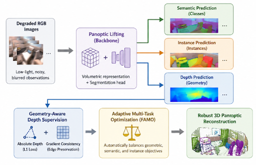
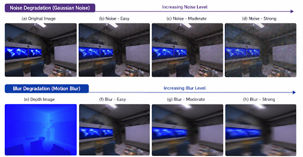

CSIRO and Queensland University of Technology*, Australia
Robotic perception in low-light environments remains a major challenge due to severe noise and motion blur that degrade RGB imagery and hinder reliable scene understanding. While recent advances in 3D panoptic reconstruction have unified semantic and instance segmentation, these methods implicitly assume high-quality inputs, an assumption that breaks down in real-world conditions. We present LUNA, a geometry-aware panoptic lifting framework designed for robust 3D scene perception under adverse visual conditions. LUNA augments the original panoptic lifting formulation with depth-guided consistency and fast adaptive multitask optimization, enabling stable reconstruction and segmentation even when visual signals deteriorate. Across multiple degradation levels, LUNA consistently outperforms restoration-enhanced baselines in both panoptic accuracy and volumetric reconstruction quality.

LUNA extends state-of-the-art Panoptic Lifting with two complementary components: (1) Geometry-aware depth supervision, combining an absolute depth error term and a gradient smoothness term to enforce spatial consistency and semantic fidelity when RGB cues alone become unreliable; and (2) Fast adaptive multitask optimization, which learns per-task weights across the photometric, geometric, semantic, instance, and segment-consistency objectives during training, emoving the need for manually tuned loss weights.

LUNA is evaluated on a systematically degraded version of the Replica dataset (six indoor scenes, three levels each of Gaussian noise and motion blur) and consistently outperforms Panoptic Lifting and restoration-augmented baselines. Strong-degradation results, averaged across scenes:
| Degradation | Method | PSNR↑ | SSIM↑ | mIoU↑ | PQ↑ |
|---|---|---|---|---|---|
| Noise (Strong) | Panoptic Lifting | 14.72 | 0.49 | 0.083 | 0.038 |
| LUNA (Ours) | 16.13 | 0.65 | 0.046 | 0.076 | |
| Blur (Strong) | Panoptic Lifting | 27.59 | 0.87 | 0.251 | 0.182 |
| LUNA (Ours) | 30.13 | 0.90 | 0.289 | 0.316 |
Rendered RGB / semantics / instances / depth
Rendered RGB / semantics / instances / depth
@inproceedings{ravendran2026luna,
title={LUNA: Low-Light Robust Panoptic Lifting for Adverse Robotic 3D Scene Perception},
author={Ravendran, Ahalya and Li, Xun and Lebrat, Leo and Santa Cruz, Rodrigo and Zhang, Hu and Petersson, Lars and Wang, Dadong},
booktitle={IEEE World Congress on Computational Intelligence (WCCI)},
year={2026}
}